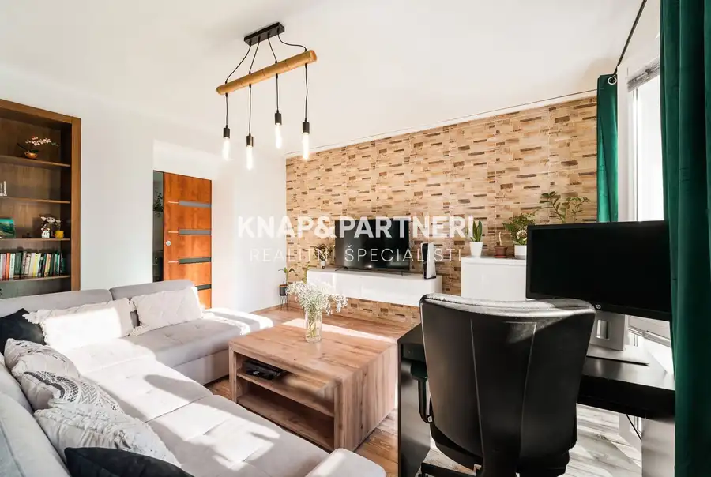
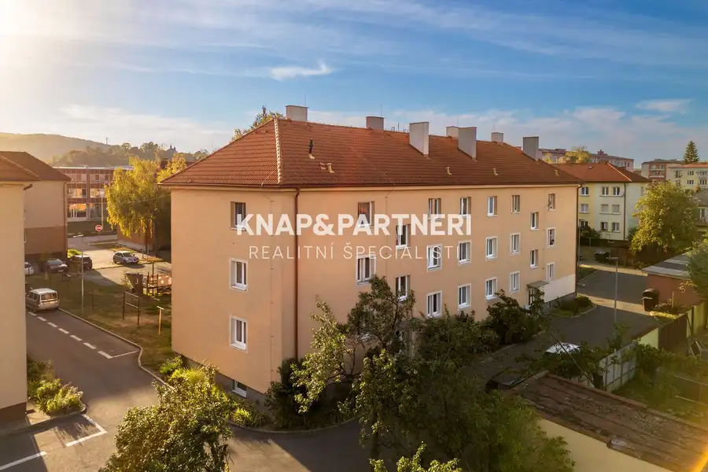
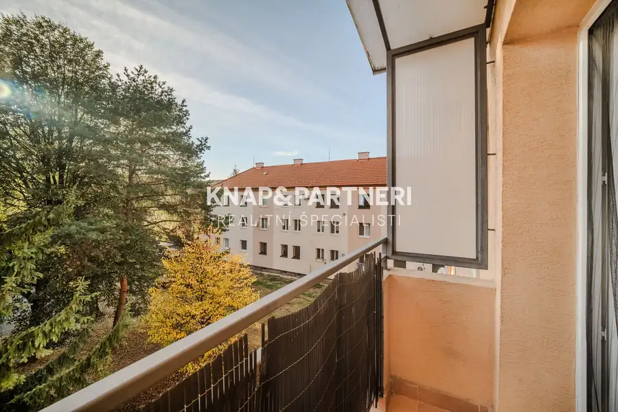
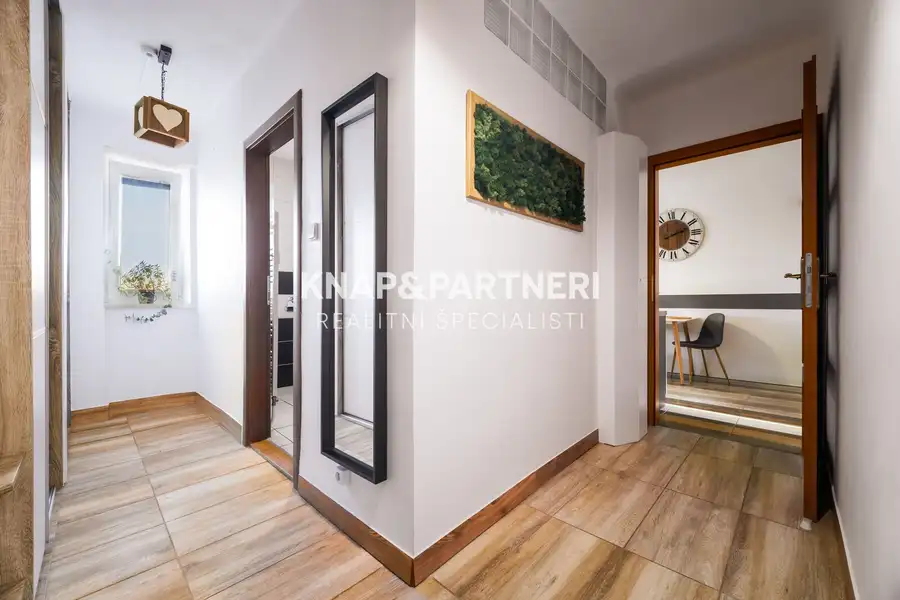
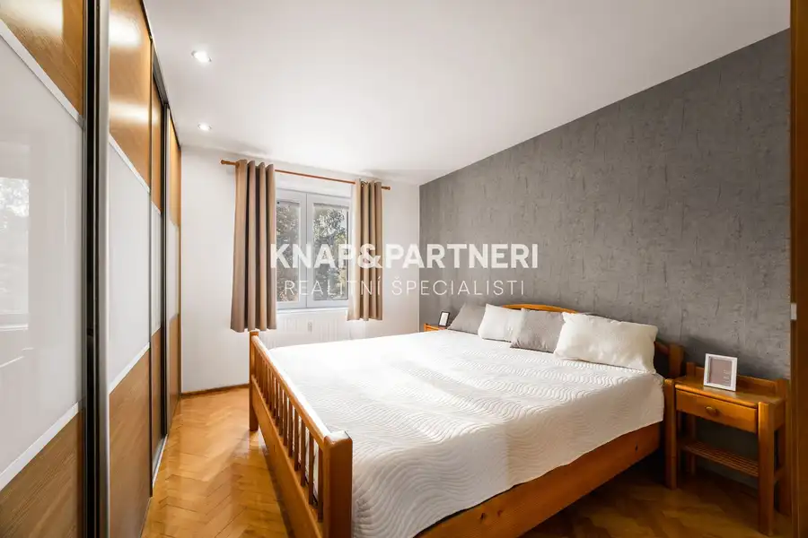
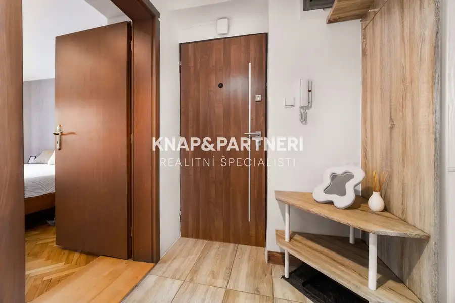
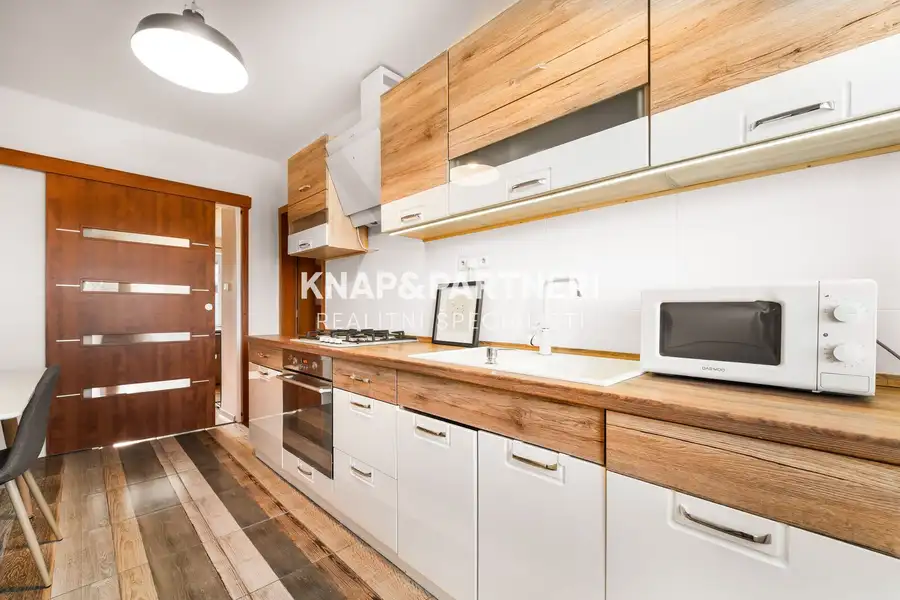
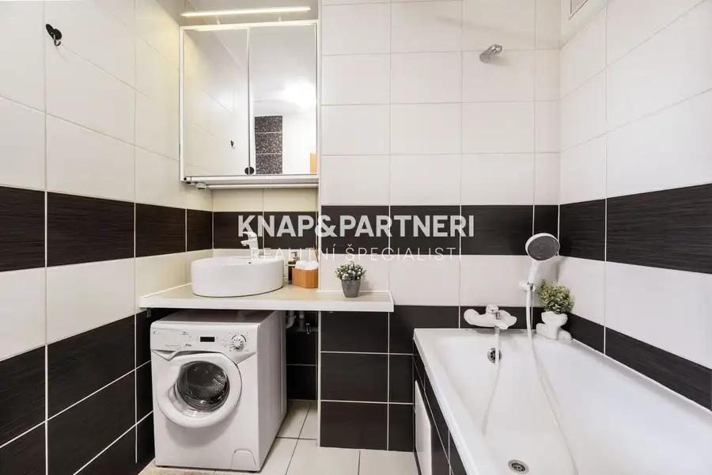

Prenájom 2 izbový byt s balkónom, 17 novembra, Prešov
Prešov








- Dispozícia2-izbový
- Plocha55 m²
- Poschodie2. z 2
- StavKompletná rekonštrukcia
- VlastníctvoOsobné
O nehnuteľnosti
Ponúkam na prenájom krásny, kompletne zariadený a zrekonštruovaný tehlový 2 izbový byt s balkónom, ktorý sa nachádza na ulici 17. novembra v Prešove - len pár minút pešo od centra mesta Prešov. Lokalita - skvelá poloha s výbornou dostupnosťou do centra. V blízkosti sa nachádza kompletná občianska vybavenosť: univerzita, zastávka MHD, vlaková stanica, obchody, školy, škôlky aj cyklochodník popri Toryse.Byt je ideálny pre jednu osobu alebo pre pár.Ďalšie podstatné informácie:◄cena nájmu: 750€ mesačne vrátane energií◄1 mesačný nájom + 2 mesačný depozit◄výmera bytu je výmera bytu 55 m², balkón 3m²Dispozícia bytu:Byt pozostáva zo vstupnej chodby, kúpeľne s vaňou a toaletou, kompletne zariadenej kuchyne, obývacej izby s výstupom na balkón a spálne.◄byt sa prenajíma s kompletným zariadením vo všetkých izbách: kompletne vybavená kuchyňa so vstavanými spotrebičmi a zariadením, chladnička, práčka, manželská posteľ s madracom, vstavaná skriňa po celej dĺžke, komoda, vstavaná skriňa v chodbe, pohovka, jedálenský stôl, balkón.◄extra benefity v kúpeľni: bidetová spŕška na toalete, zabudované rádio v kúpeľni◄byt sa nachádza na 2 poschodí◄ponuka je vhodná pre 1 alebo 2 osoby, alebo 2 študentky, bez domácich zvierat, bez detí◄výhody: tiché prostredie, kompletná rekonštrukcia a zariadenie, v blízkosti peši komplet občianska vybavenosť, len sa nasťahovať s kufrom a zubnou kefkou◄parkovanie - rezidenčná karta◄ byt je voľný od 01.11.2026V prípade, že zvažujete predaj svojej nehnuteľnosti, rada vám pomôžem.Ak vás ponuka zaujala, neváhajte ma kontaktovať pre dohodnutie osobnej obhliadky. Pre viac otázok ma kontaktujte na 0949 212 952, emailom na knapova@knapapartneri.sk alebo osobne v kancelárii na adrese Jarková 14 v Prešove.
Parametre
- Cena vrátane energií
- Nie
- Druh
- 2 izbový byt
- Dátum zverejnenia
- 05. 10. 2026
- Energetický certifikát budovy
- nie je
- Orientácia
- Severovýchodná
- Podlažie
- 2
- Počet nadzemných podlaží
- 2
- Stav nehnuteľnosti
- Kompletná rekonštrukcia
- Typ
- Prenájom
- Typ konštrukcie
- Tehlová
- Umiestnenie
- Vstavba podkrovia
- Vlastníctvo
- Osobné
- Zariadenie
- Čiastočne zariadené
- Úžitková plocha
- 55 m²
Kde to je


Mohlo by Vás zaujímať
 Komerčné priestoryNové
230 000 €Objekt so 4-izbovým bytom a veľkým pozemkom, 3263m2, Hanušovce nad Topľou
Hanušovce nad Topľou
400 m²
Komerčné priestoryNové
230 000 €Objekt so 4-izbovým bytom a veľkým pozemkom, 3263m2, Hanušovce nad Topľou
Hanušovce nad Topľou
400 m²
 PozemokNové
45 000 €Stavebný pozemok 807m2, is pri pozemku, Hanušovce nad Topľou
Hanušovce nad Topľou
807 m²
PozemokNové
45 000 €Stavebný pozemok 807m2, is pri pozemku, Hanušovce nad Topľou
Hanušovce nad Topľou
807 m²
 PozemokNové
42 900 €Stavebný pozemok 950m2, všetky is, Hanušovce nad Topľou
Hanušovce nad Topľou
950 m²
PozemokNové
42 900 €Stavebný pozemok 950m2, všetky is, Hanušovce nad Topľou
Hanušovce nad Topľou
950 m²